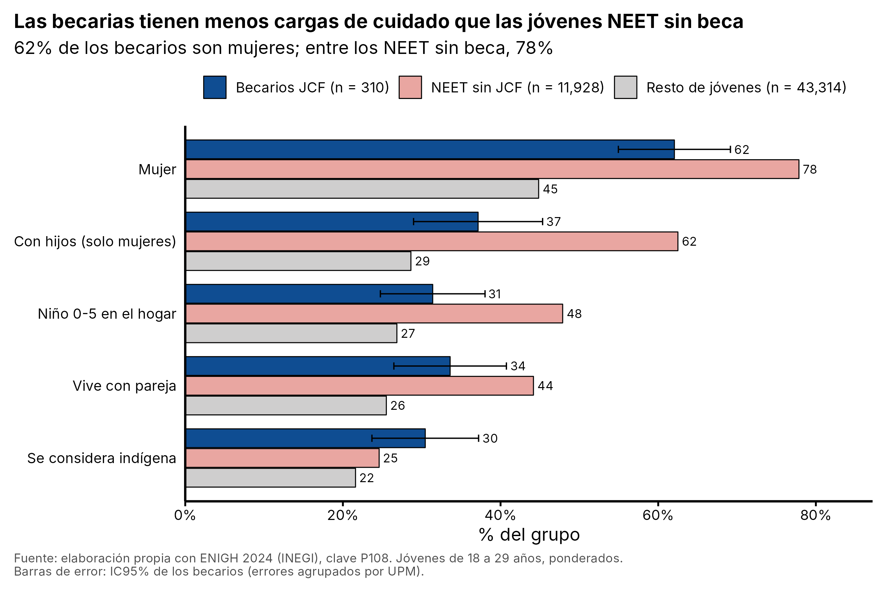
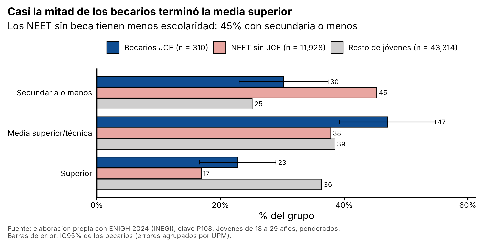
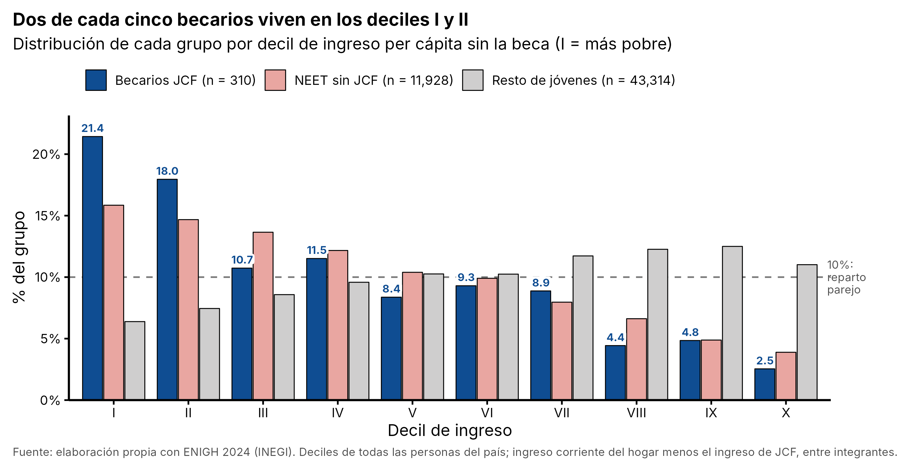
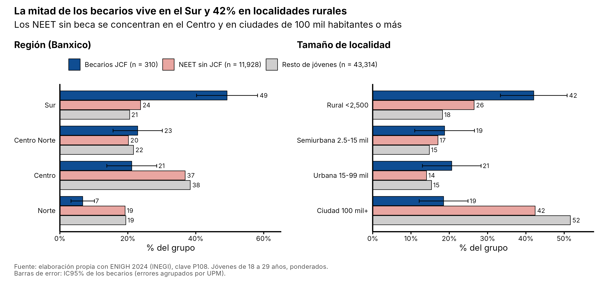

Contexto 2 · Quiénes son: perfiles con la ENIGH 2024
Becarios de JCF, jóvenes NEET sin beca y el resto de los jóvenes de 18 a 29 años
La ENIGH 2024 permite ver algo que el padrón no trae: cómo viven las y los jóvenes que reciben la beca y en qué se parecen, o no, a quienes la necesitan y no la tienen. Aquí se comparan tres grupos de 18 a 29 años: becarios de JCF (310 en la muestra), NEET sin JCF, es decir, quienes no estudian ni trabajan y no reciben la beca (11,928), y el resto de los jóvenes (43,314). Los dos primeros forman la necesidad del programa, así que su contraste muestra a quién deja fuera.
1. Ingreso parecido, cargas de cuidado muy distintas
Becarios y NEET sin JCF viven en hogares de ingreso parecido: cerca de ocho de cada diez están en los deciles I a VI (79 % y 77 %). Lo que los separa es el cuidado. Entre las mujeres NEET sin JCF, 63 % tiene hijos, contra 37 % de las becarias, y 48 % de los NEET sin JCF vive con un niño de 0 a 5 años.

Las razones que dan para no trabajar apuntan en la misma dirección: el 83 % de las mujeres NEET sin JCF se dedica a los quehaceres del hogar, mientras que el 54 % de los hombres NEET sin JCF buscó trabajo.
2. Más escolaridad entre quienes reciben la beca
Casi la mitad de los becarios terminó la media superior. Entre los NEET sin beca, 45 % tiene secundaria o menos.

3. Muy concentrados en los hogares de menor ingreso
Dos de cada cinco becarios viven en hogares de los deciles I y II, medidos con el ingreso del hogar sin la beca.

4. Sur y rural, frente a una necesidad que está en las ciudades
La mitad de los becarios vive en el Sur y 42 % en localidades rurales, coherente con la prioridad que las reglas de operación dan a municipios de alto rezago y a población indígena (30 % de los becarios se considera indígena, contra 25 % de los NEET sin beca). Los NEET sin beca, en cambio, se concentran en el Centro y en ciudades de 100 mil habitantes o más.

5. Un problema de medición
Solo 21 % de los becarios se declara NEET en la encuesta: la mayoría cuenta el aprendizaje como trabajo. Por eso el informe define la necesidad como NEET o becario. Si solo se contara a quienes se declaran NEET, quedarían fuera cuatro de cada cinco becarios.
Tabla completa
Porcentajes ponderados con el factor de expansión; entre corchetes, IC95% con errores agrupados por UPM.
| Característica (%) | Becarios JCF (n = 310) | NEET sin JCF (n = 11,928) | Resto (n = 43,314) |
|---|---|---|---|
| Mujer | 62.1 [54.9, 69.2] | 77.9 [76.6, 79.1] | 44.8 [44.1, 45.5] |
| 18 a 24 años | 66.2 [59.5, 72.9] | 58.5 [57.0, 59.9] | 62.3 [61.5, 63.0] |
| Jefe(a) o cónyuge | 25.2 [19.0, 31.4] | 30.0 [28.6, 31.3] | 21.2 [20.5, 21.9] |
| Vive con pareja | 33.6 [26.5, 40.7] | 44.2 [42.7, 45.6] | 25.5 [24.7, 26.3] |
| Con hijos (solo mujeres) | 37.2 [29.0, 45.3] | 62.5 [60.9, 64.1] | 28.6 [27.6, 29.6] |
| Niño 0-5 en el hogar | 31.4 [24.8, 38.0] | 47.9 [46.3, 49.4] | 26.8 [26.0, 27.7] |
| Secundaria o menos | 30.2 [23.0, 37.4] | 45.3 [43.7, 46.8] | 25.1 [24.3, 26.0] |
| Media superior/técnica | 47.0 [39.3, 54.8] | 37.8 [36.4, 39.3] | 38.5 [37.8, 39.3] |
| Superior | 22.8 [16.6, 29.0] | 16.9 [15.8, 18.1] | 36.4 [35.5, 37.2] |
| Habla lengua indígena | 5.7 [2.4, 8.9] | 7.0 [5.9, 8.2] | 4.9 [4.2, 5.5] |
| Se considera indígena | 30.4 [23.7, 37.2] | 24.6 [22.9, 26.3] | 21.6 [20.5, 22.7] |
| Afromexicano(a) | 1.6 [0.0, 3.4] | 2.7 [2.2, 3.2] | 3.0 [2.7, 3.4] |
| Discapacidad | 2.6 [0.0, 5.9] | 6.3 [5.7, 7.0] | 2.2 [1.9, 2.4] |
| Deciles I-II (sin beca) | 39.4 [31.5, 47.3] | 30.5 [28.8, 32.2] | 13.8 [13.0, 14.6] |
| Deciles I-IV | 61.6 [53.7, 69.5] | 56.3 [54.6, 58.1] | 32.0 [30.9, 33.1] |
| Deciles I-VI | 79.3 [72.9, 85.7] | 76.6 [75.2, 78.1] | 52.5 [51.4, 53.6] |
| Norte | 6.7 [3.3, 10.2] | 19.2 [17.9, 20.5] | 19.4 [18.4, 20.4] |
| Centro Norte | 22.9 [15.7, 30.2] | 20.2 [18.7, 21.7] | 21.7 [20.4, 22.9] |
| Centro | 21.2 [13.8, 28.5] | 36.9 [34.6, 39.2] | 38.4 [36.7, 40.1] |
| Sur | 49.2 [40.2, 58.2] | 23.7 [21.9, 25.6] | 20.5 [19.3, 21.8] |
| Ciudad 100 mil+ | 18.5 [12.1, 24.9] | 42.4 [40.3, 44.5] | 51.6 [50.0, 53.2] |
| Urbana 15-99 mil | 20.6 [13.0, 28.3] | 14.1 [12.5, 15.6] | 15.4 [14.1, 16.7] |
| Semiurbana 2.5-15 mil | 18.8 [11.0, 26.6] | 17.0 [14.9, 19.2] | 14.8 [13.3, 16.3] |
| Rural <2,500 | 42.1 [33.4, 50.8] | 26.5 [24.6, 28.4] | 18.2 [17.0, 19.4] |
| Dice que trabajó el mes pasado | 74.6 [67.6, 81.6] | 0.0 [0.0, 0.0] | 79.7 [79.0, 80.4] |
| Asiste a la escuela | 14.4 [8.9, 19.9] | 0.0 [0.0, 0.0] | 31.2 [30.4, 32.0] |
Fuente: elaboración propia con la ENIGH 2024 (INEGI), clave de ingreso P108. Jóvenes de 18 a 29 años. Deciles de todas las personas del país, con el ingreso corriente del hogar por persona sin el ingreso de JCF.